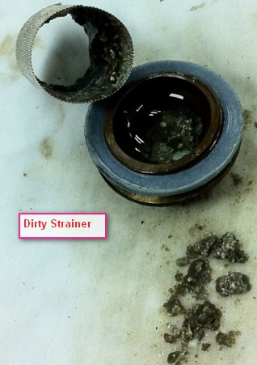

Service History
Subject: NS-8040 NS80-44 ATC both thermal controller alarm led light turn on after a while.
Handler Model: NS-8040
Controller: RC520
Date: 9 Nov 2011
Symptom
Encountered both thermal controller alarm led light turn on after a while. Water tubing felt warm and temperature unable to control.
Action
- Checked neg pressure reservoir and water not filling up when chiller was turned on.
- Opened up chiller casing, switched on reserve tank inlet and outlet to enable water flow into empty pump.
- Topped up chiller with DI water. Controller alarm still persisted.
- Removed strainer and found filter chocked with dirt (refer to picture).

Serviced filter and resolved controller alarm.
- Replaced both thermal head 1 and 5 with straight fittings and new tubing.
- Secured both head 1 and 5 onto index arm 1 and 2. Connected head 1 and 5 return and supply tubing to manifold. Power up chiller and checked no water leakage.
- Setup change kit and created BGA1280 45x45 setup file. No dummy units.
- Heated up to 80 deg and dry cycle run handler. Released handler to Ray.
Cause
Dirty strainer & dirty filter in chiller caused thermal controller alarm LED on.